3·場域導入成果
新興運動科技計畫
整合 AI 視覺辨識、無標記式生物力學與雲端數據平台
打造台灣棒球的科技基礎建設
場域科技化與跨域加值應用
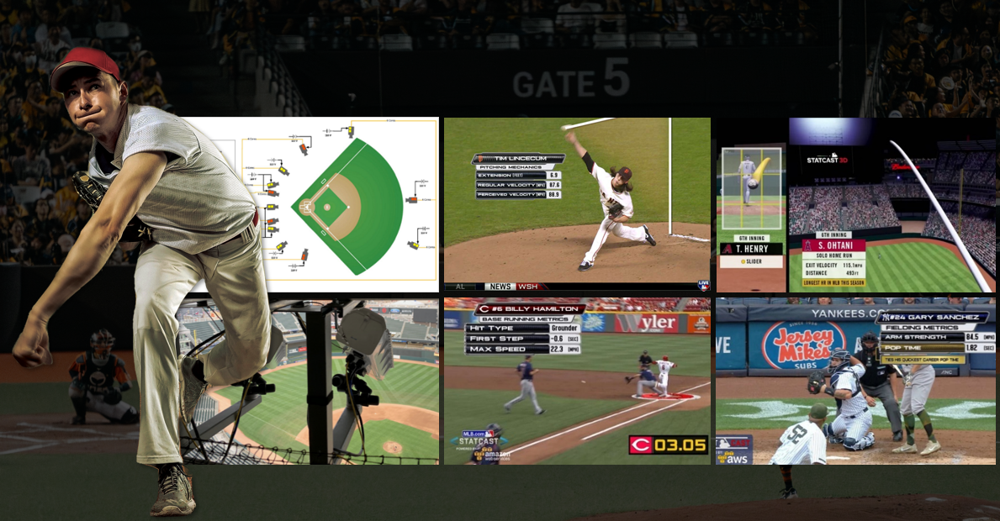
＊115 年包含所有 MLB Statcast 公開數據，其中揮擊軌跡、擊球落點、出手延伸等數據更是只有電腦視覺技術才能捕捉到的
AI 攝影機即時球道追蹤，16 項投球指標
球速 / 旋轉數 / 旋轉軸 / 位移全覆蓋
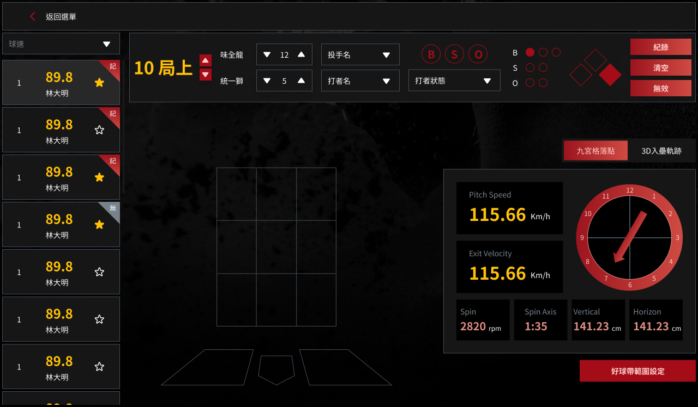
3D 關節座標重建
肩膀分離、肘關節內翻力矩，無需穿戴感測器
賽後雲端分析、歷史數據查詢
3D 渲染轉播服務
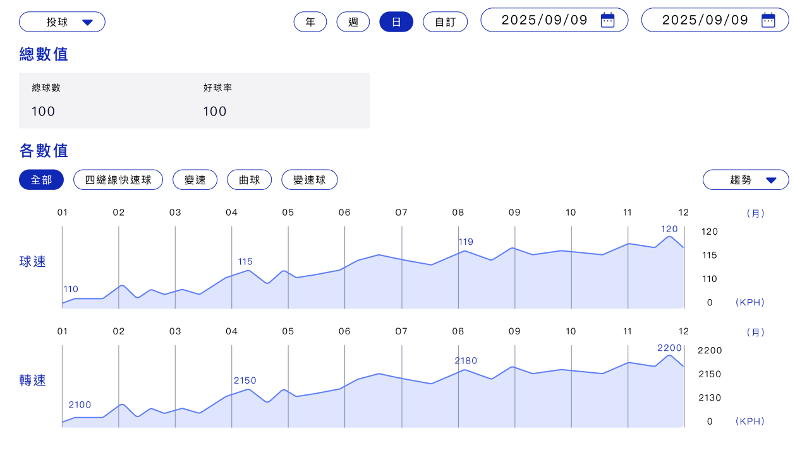
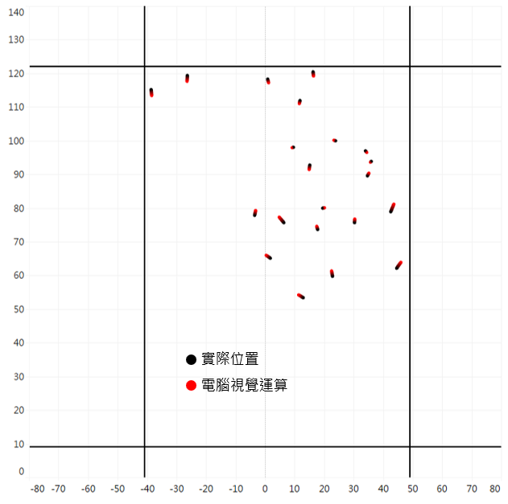
串聯天母棒球場鷹眼系統，賽中即時數據回傳與可視化
賽後雲端分析，球員歷史數據多維度查詢（時段 / 對手 / 場地）
以視覺化圖表呈現進階數據
即時 3D 渲染數據加值轉播服務，提升觀賽體驗
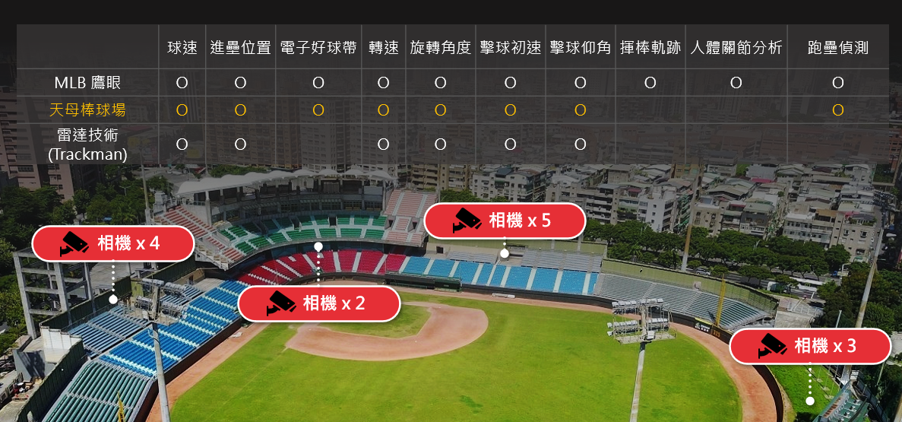

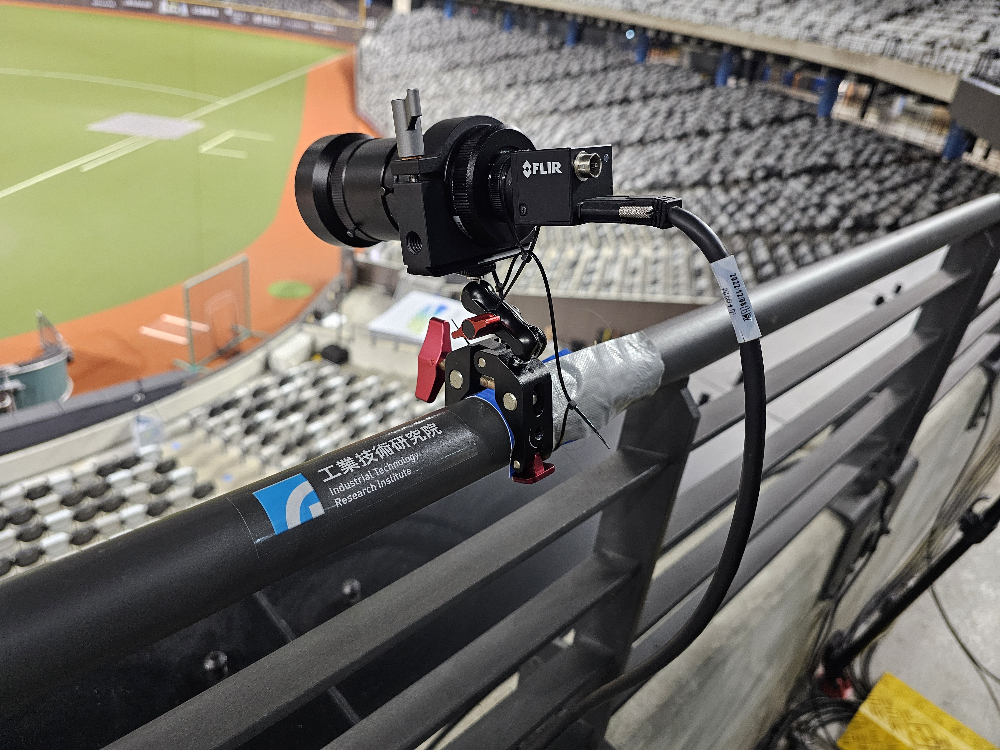
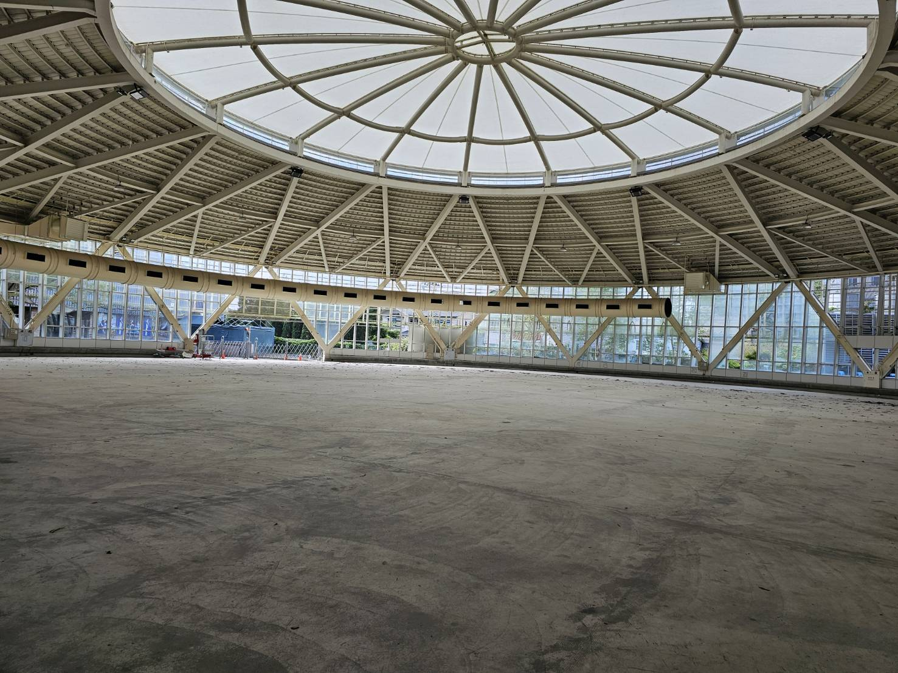
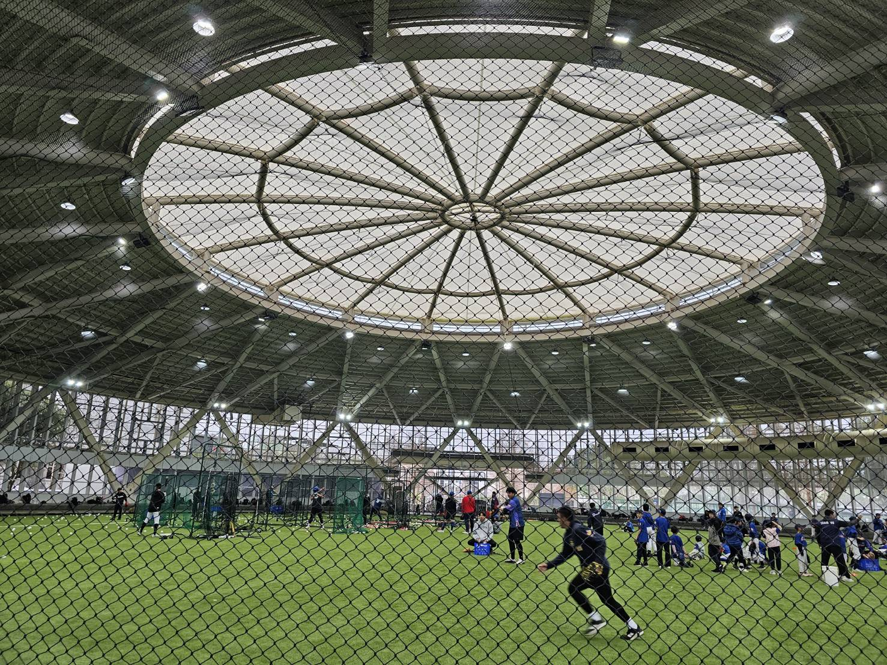
建置內容：電子好球帶 + 投球生物力學分析
重點目標：數據影像收集與使用者回饋
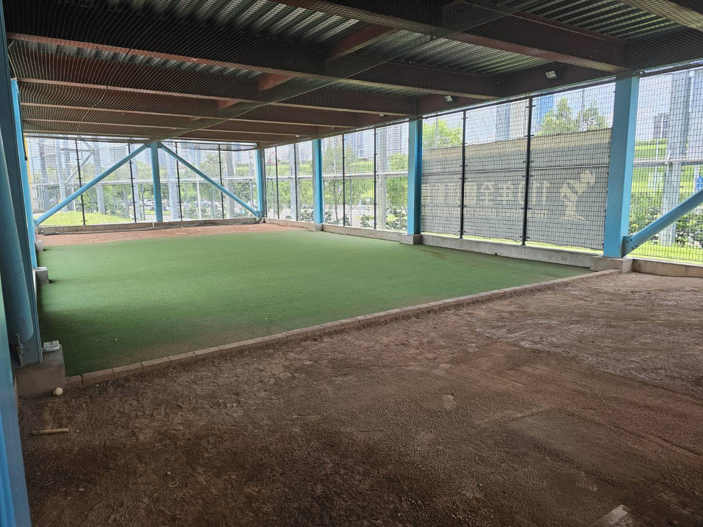
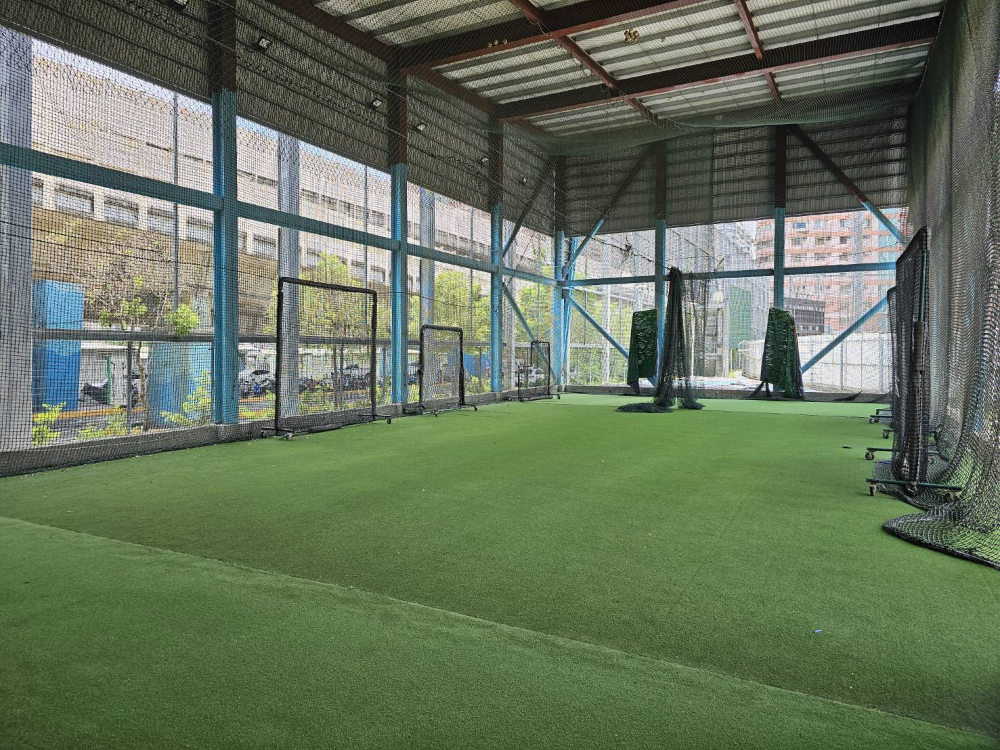
建置內容：Phase 1 球體數據捕捉（Basler 高速攝影機）
重點目標：球體縫線、位移計算及效能提升
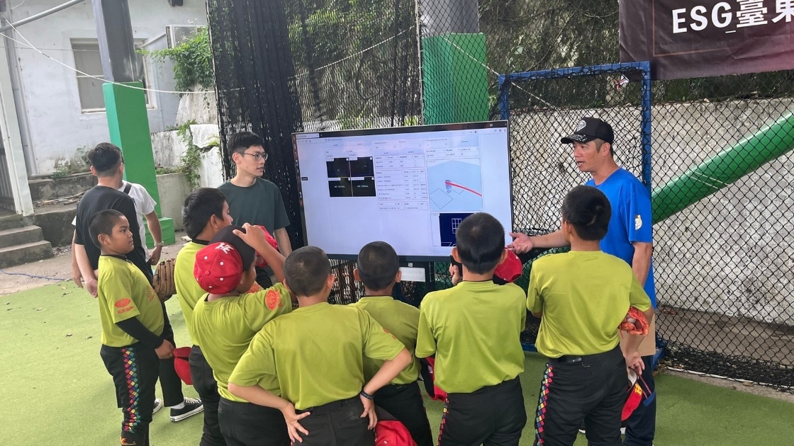
114 年 → 116 年 技術發展重點
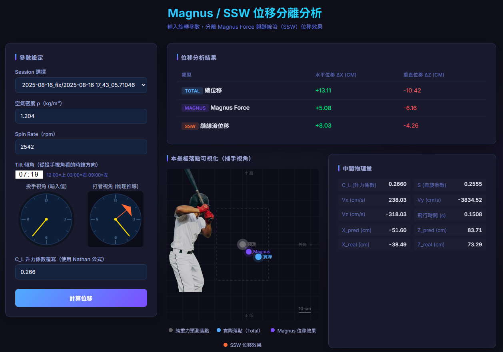